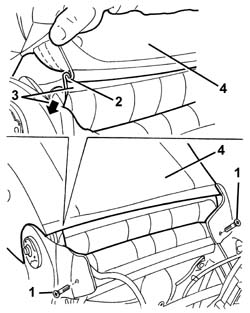
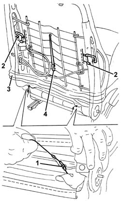
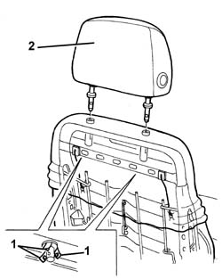

7045B10 L/H OR R/H FRONT SEAT HEAD RESTRAINT - R+R
- Path
- Procedures > 70 FITTINGS > 7045 FRONT SEATS > 7045B FRONT SEAT HEAD RESTRAINT/ARM REST > 7045B10 L/H OR R/H FRONT SEAT HEAD RESTRAINT - R+R
- Kind
- repair procedure (removal / refitting; the operation number is the code)
- Applies to
- all engines; all production periods
- Interactive page
- https://sloeber94.github.io/elrnDB-aGt/en/#/125001926
Applies to: engines: 1.8 T.SPARK; all production periods
Applies to: all engines; all production periods
 Removing
Removing
 Refitting
RefittingOp. 7045A10 L/H OR R/H FRONT SEAT (ONE) - R+R
Op. 7045A25 SQUAB LUMBAR KNOB - R R
1. Undo the side guard rear retaining bolts.
2. Disconnect the two bottom ends of the squab cover, hooked onto each other.
3. Pass the end of the trim through from the front part of the squab.
4. Lift the cover as much as possible.

Applies to: all engines; all production periods
1. Release the cords from the retainers.
2. Insert a hand under the cover and disconnect the side tensioning hooks.
3. Lift the cover as much as possible.
4. Disconnect the central flexible retainer and take out from the front side of the squab.

Applies to: all engines; all production periods
1. Raise the trim until the head restraint pin retaining tabs can be disengaged.
2. Remove the head restraint.

Applies to: all engines; all production periods
Refitting
RemovingCheck that the head restraint is undamaged.
Position the head restraint and fit into its seat. Engage the retaining tabs.
Lower the trim.
Connect the central elastic to the retainer.
Connect the side tensioning hooks.
Pull as appropriate and hook the cords to the retainers.
Fully lower the trim and hook the two bottom ends of the squab cover to each other.
Tighten the side shield rear retaining bolts.